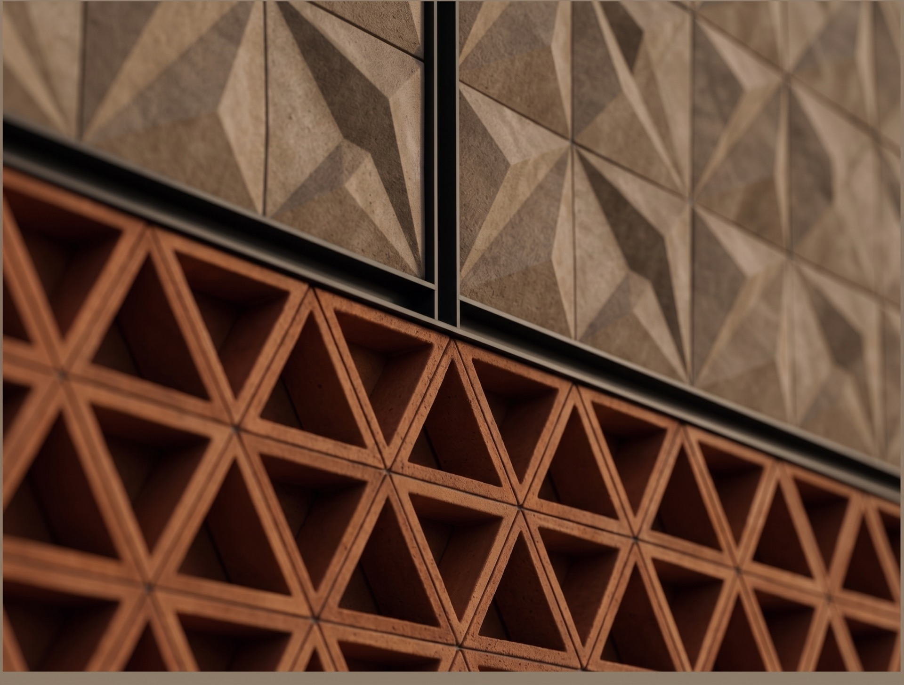

تفتتح صحارى أرينا في سبتمبر 2026 في منتجع صحارى الكويت بمنطقة صبحان. يُعلن برنامج الافتتاح قبل الافتتاح — سجّل اهتمامك عبر صفحة التواصل لتكون أول من يعلم.
في منتجع صحارى الكويت بمنطقة صبحان على الدائري السادس — نحو ست دقائق من مطار الكويت الدولي وعشر دقائق من مدينة الكويت. راجع صفحة «خطط لزيارتك» للاتجاهات والمواقف.
تُباع التذاكر حصرياً عبر شريك تذاكر رسمي يُعلن مع برنامج الافتتاح. كل فعالية مؤكدة في هذا الموقع تربط مباشرة بمنصة البيع الرسمية — ولا يوجد بائع آخر معتمد.
نعم — مواقف لنحو 2,000 مركبة في الموقع، منها نحو 250 موقفاً لكبار الشخصيات مع خدمة صف السيارات. مواقف ذوي الإعاقة هي الأقرب إلى المدخل.
مواقف مخصصة قرب المدخل، ودورات مياه مهيأة، ومصاعد، وأماكن مخصصة للكراسي المتحركة مع مقاعد للمرافقين. تواصل معنا قبل زيارتك لمساعدة مخصصة.
تُحدد مواعيد فتح الأبواب وسياسات الدخول لكل فعالية وتُنشر مع إعلان الفعالية وعلى تذكرتك.
نعم — حفلات وبطولات ومعارض وفعاليات مؤسسية وأعراس واحتفالات. ابدأ من صفحة «استضف فعاليتك»: يصل طلب الاستئجار مباشرة إلى الفريق التجاري.
يوفر المركز الإعلامي أصول العلامة المعتمدة ومسار التواصل الصحفي. تُعطى الاستفسارات الإعلامية أولوية عبر نموذج التواصل باختيار نوع الاستفسار «الإعلام والصحافة».